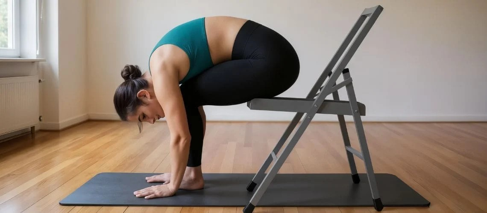

Qu'est-ce que la préférence directionnelle en méthode McKenzie ?
Le système de Diagnostic et Thérapie Mécanique (MDT), conçu par le kinésithérapeute néo-zélandais Robin McKenzie, repose sur une évaluation clinique du comportement des symptômes lors de mouvements répétés ou de positions soutenues.

L'anecdote à l'origine de la découverte (1956)
L'histoire raconte que le concept de préférence directionnelle est né d'un heureux hasard clinique en 1956 dans le cabinet de Robin McKenzie à Wellington. Un patient nommé Mr. Smith, qui souffrait depuis trois semaines d'une douleur lombaire sévère irradiant dans la fesse et la jambe jusqu'au genou, s'est présenté au cabinet pour sa séance habituelle.
Le patient précédent venant de recevoir un soin du genou, la table d'examen était restée relevée à sa tête. En entrant seul dans la salle de soin, Mr. Smith s'est installé sur le ventre, le buste redressé vers l'arrière dans une position d'extension lombaire extrême. À l'époque, la règle médicale voulait qu'on évite absolument de cambrer le dos en cas de lombalgie ou de sciatique.
Lorsque Robin McKenzie est entré dans la pièce dix minutes plus tard, il a craint le pire en découvrant son patient dans cette posture théoriquement déconseillée. Mais à sa grande surprise, le patient a déclaré que c'était la première fois en trois semaines qu'il se sentait aussi soulagé : la douleur avait complètement quitté sa jambe pour se recentrer uniquement dans le bas du dos. En se redressant, la douleur dans la jambe n'était pas revenue. Cette observation fortuite a marqué le début des travaux de McKenzie sur l'évaluation mécanique et le comportement des symptômes.
La notion de préférence directionnelle
Au cours de l'évaluation clinique, le praticien cherche si la réalisation d'un mouvement spécifique répété (par exemple l'extension lombaire, la flexion ou des glissements latéraux) permet d'obtenir une amélioration nette et durable de la douleur et de la mobilité (May & Aina, 2012).
Lorsqu'une direction de mouvement particulière réduit les symptômes, améliore l'amplitude ou centralise la douleur, on parle de préférence directionnelle. La littérature scientifique montre qu'une préférence directionnelle est identifiée chez environ 65 % à 70 % des patients souffrant de lombalgie aiguë ou sous-aiguë (Long et al., Spine, 2004).
Le phénomène de centralisation
Un aspect clé de l'évaluation MDT est la recherche de la centralisation. Lorsqu'une personne souffre d'une douleur projetée ou référée (comme une sciatique qui descend dans la fesse, la cuisse ou le mollet), l'enchaînement de mouvements dans la préférence directionnelle fait remonter la douleur vers la ligne médiane du bas du dos.
Les études prospectives démontrent que la présence d'une centralisation lors du bilan initial est un facteur pronostique majeur de bonne récupération fonctionnelle et de réduction du risque de chronicité (Werneke & Hart, Spine, 2001).
Une démarche axée sur l'autonomie
L'objectif principal de l'identification d'une préférence directionnelle est de vous donner un moyen d'action concret. Une fois le mouvement approprié validé lors du bilan, vous disposez d'un exercice simple et ciblé à effectuer régulièrement au quotidien pour gérer vos symptômes et prévenir les récidives.
Références scientifiques & Littérature
- May S, Aina A. Centralization and directional preference: an updated systematic review. Manual Therapy, 2012; 17(6):497-506.
- Long A, Donelson R, Fung T. Does it matter which exercise? A randomized trial of exercise for low back pain. Spine, 2004; 29(23):2593-2602.
- Werneke M, Hart DL. Centralization phenomenon as a prognostic indicator for acute low back pain. Spine, 2001; 26(7):758-765.
- McKenzie R, May S. The Lumbar Spine: Mechanical Diagnosis & Therapy. Spinal Publications, 2nd Edition, 2003.